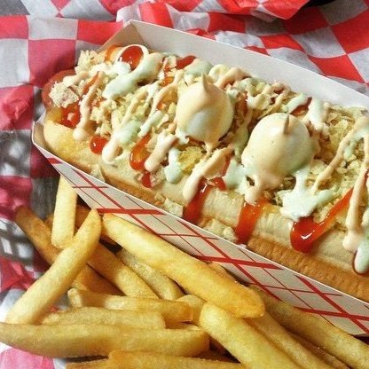
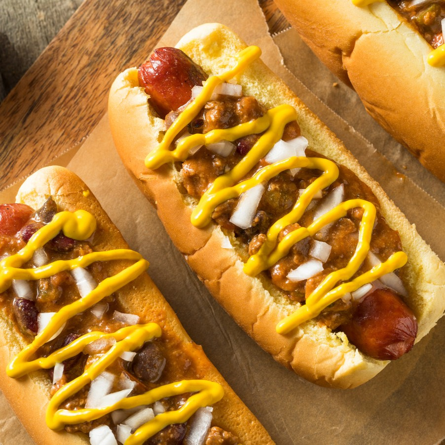
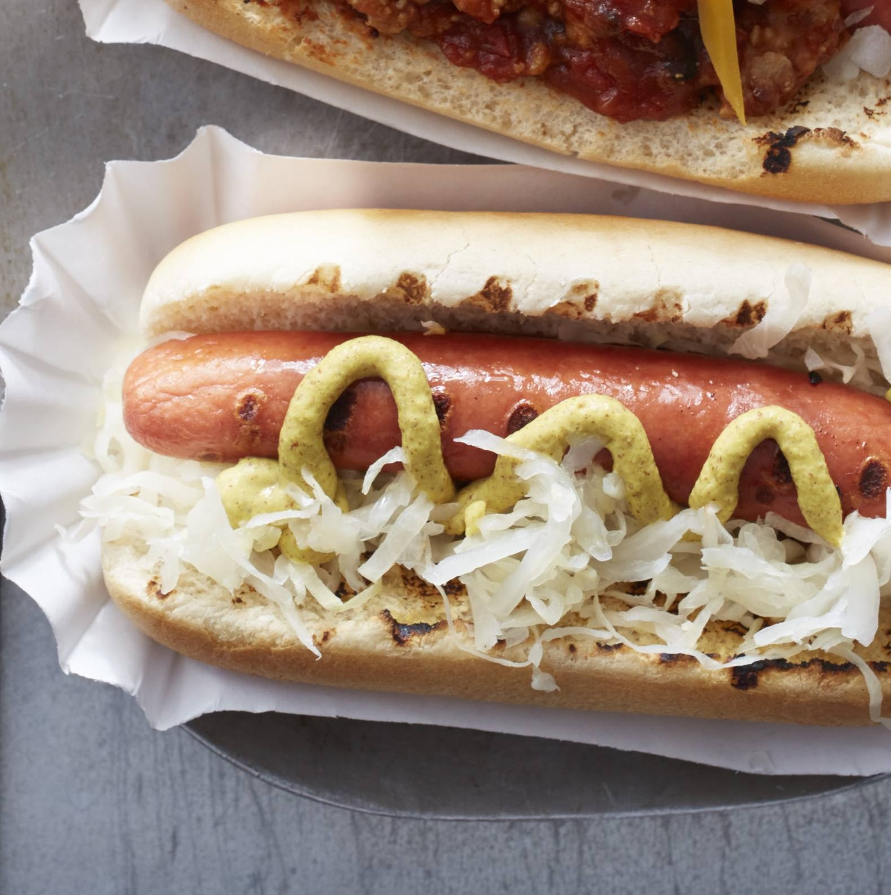
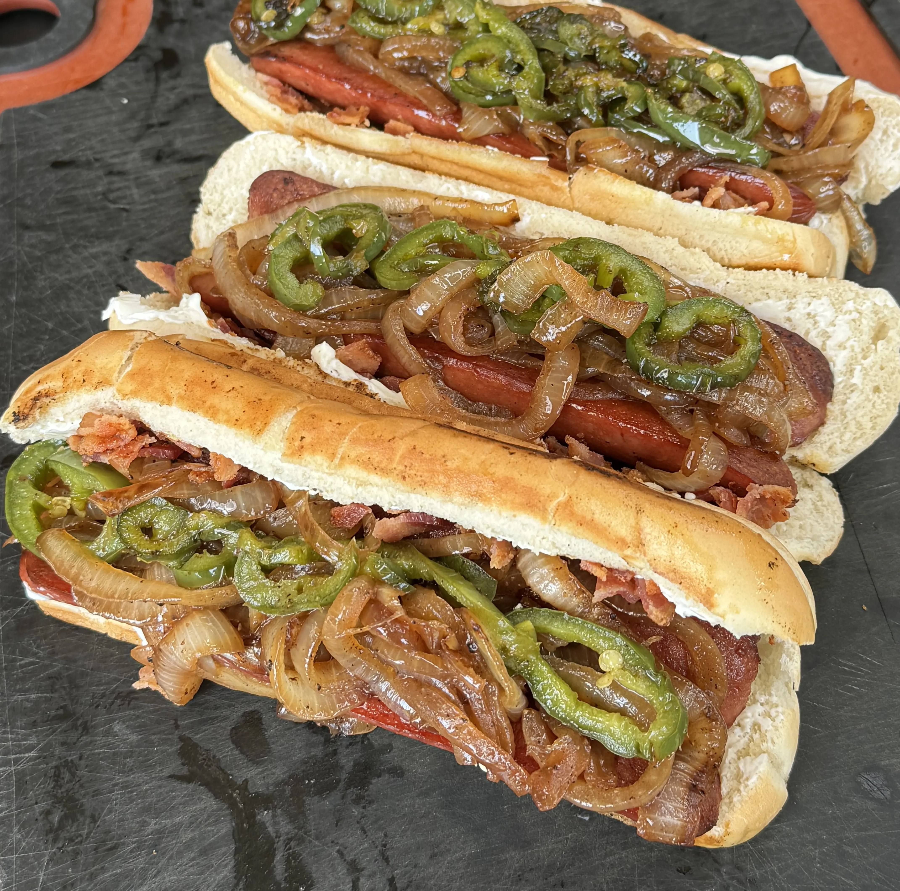
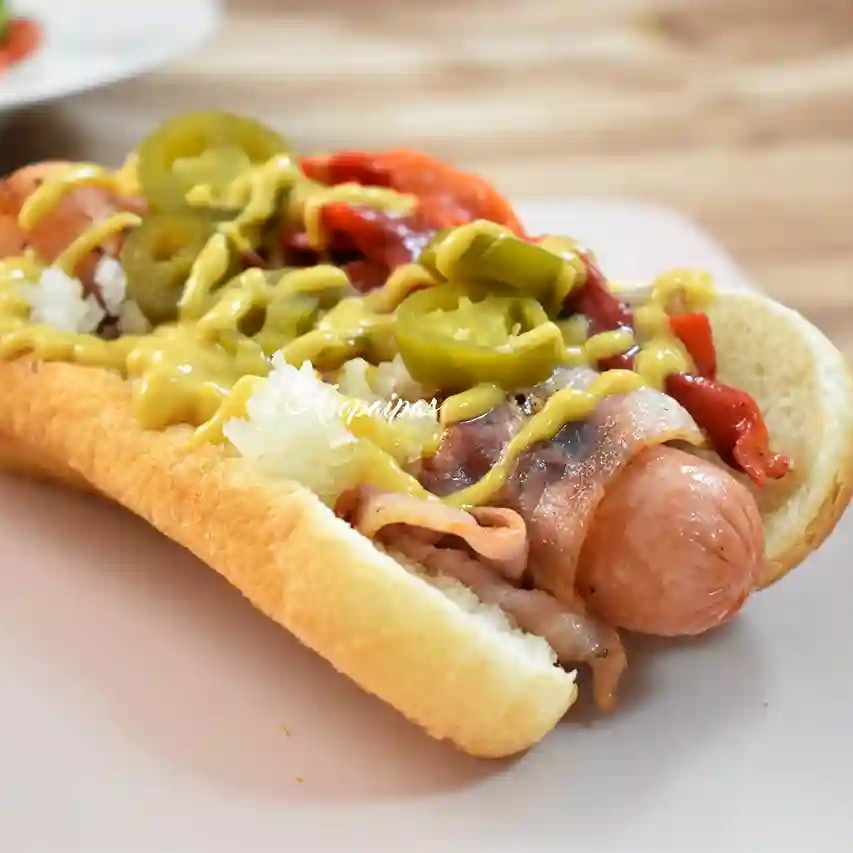

Nuestro Menú

Perro Colombiano
Salchicha en bollo, kétchup, mostaza, mayonesa, piña, patatas fritas machacadas y huevo duro.

Perro Michigan
Salchicha en bollo, chili con carne y mostaza.

Perro NY
Salchicha en bollo de pan, mostaza, chucrut -col fermentada- y salsa de cebolla.

Perro Seattle
Salchicha Bratwurst, crema de queso, jalapeños en rodajas, col y salsa sriracha.

Perro Tijuana
Salchicha envuelta en bacon, tiras de pimiento asado, cebolla, jalapeños y bollo de pan tierno.